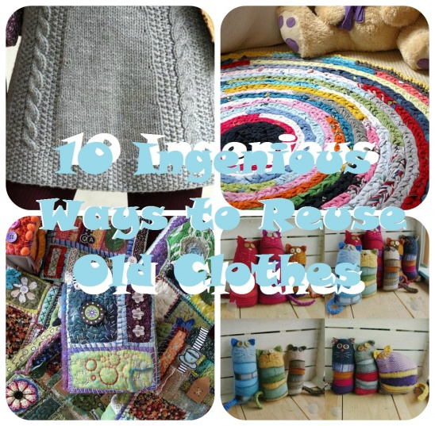

Small Steps We Can All Take To Reduce Our Carbon Footprint


In my life, there have been few issues that have impacted the way I do things day-to-day like climate change. Being born in the mid-80's, I grew up being taught about the pollution that people produce just by living our lives the way we do, and how that is impacting the world around us. It can be intimidaing to accept the responsibility of being a good steward of our planet, especially when the fate of generations hinges on the next few years. There was a point in my life, a little over 20 years ago when I decided that everyone else could do as they pleased, but I would make the choice to help in my own small way. There are many small (and large) adjustments we can each make in our day-to-day lives that would have a positive impact on our global future. Here are a few ideas that can help reduce your carbon footprint. I believe we can set an example for those around us and influence the culture around waste and consummerism to create the change we wish to see.
"It is difficult to make big changes in life. It's much easier to make smaller "adjustments"."-My mom, Brenda Torrez
The first step toward making any adjustments in a positive direction is knowing where you begin! Take a look at a carbon footprint calculator, like this one,to see where you start!


It may be hard to switch to a vegitarian or vegan diet, but simply reducing the amount of meat, eggs and dairy you consume (especially red meats such as beef and lamb), you can significantly reduce your "foodprint".
While the carbon impact of organic farming has not been proven to be less than traditional farming methods, it is more likely that organic farmers are using more environmentally sustainable methods that will have a larger imapc as time goes on. Locally grown produce does not need to travel as far to reach you, thus cutting down on carbon produced by transporting the goods.
Foods such as coffee, cocoa, palm oil and others are often farmed in areas that used to be forests. This is especially true for the Amazon Rainforest which has been experiencing massive deforestation to make room for farmers to plant crops. By checking the ingredient labels on the products you buy, you can send your consumer dollars toward companies who take more responsibility for the sources of their ingredients.
Dining out, especially on fast food, produces more waste and requires more production and transportation of goods than simply cooking a meal in your own kitchen. I'm not saying don't support local businesses, just maybe don't eat out every night.
Learn new recipes that incorporate leftovers. Be mindful of portion size and adjust if you find yourself throwing away extra food often. Plan your shopping list by meals you plan on making at home so you only buy what you'll use. Incorporate composting to put your food scraps to good use. And my personal favorite, adopt the mom diet; don't fix yourself a plate, just eat your kid's leftovers and a buch of ice cream after they go to bed.
links to red wrigglers composter, easy at home dinner recipes, rainforest alliance link)


